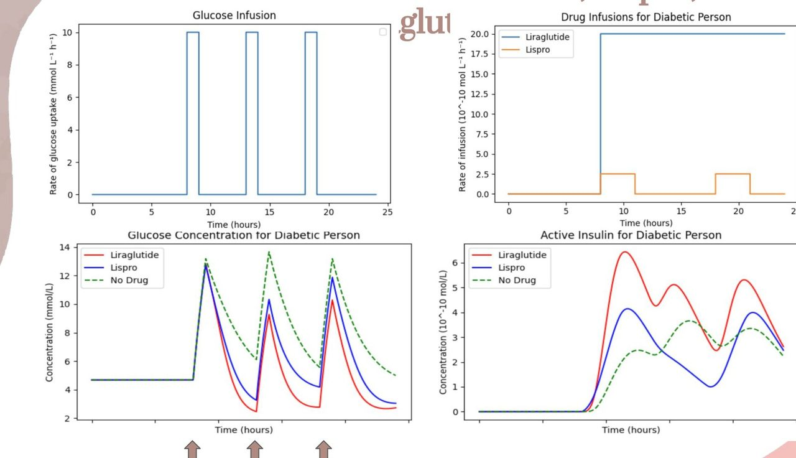
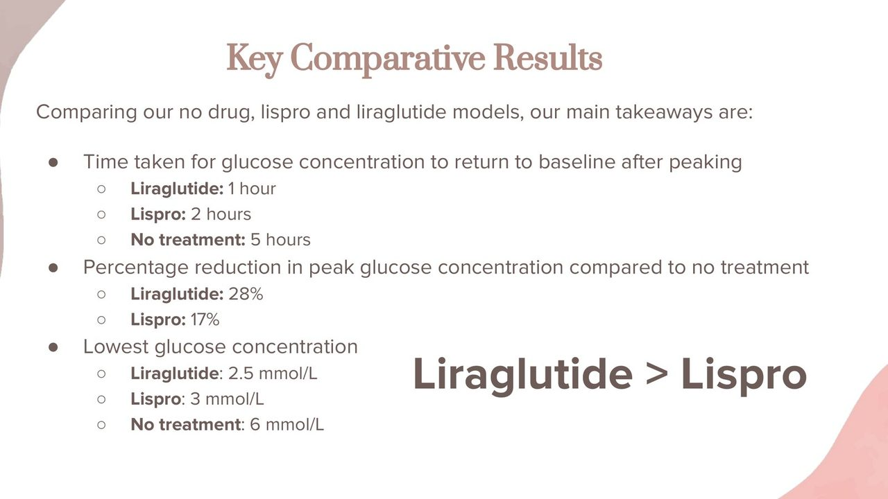
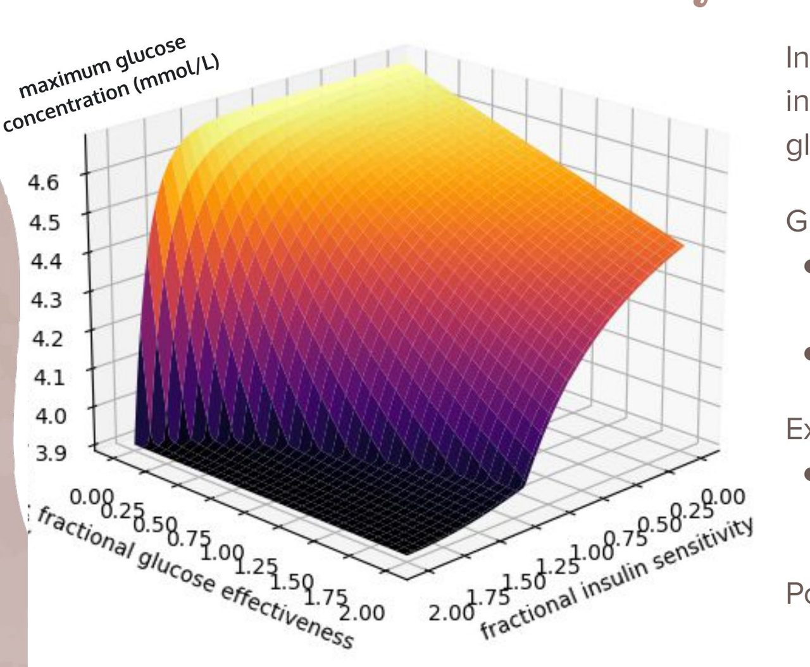
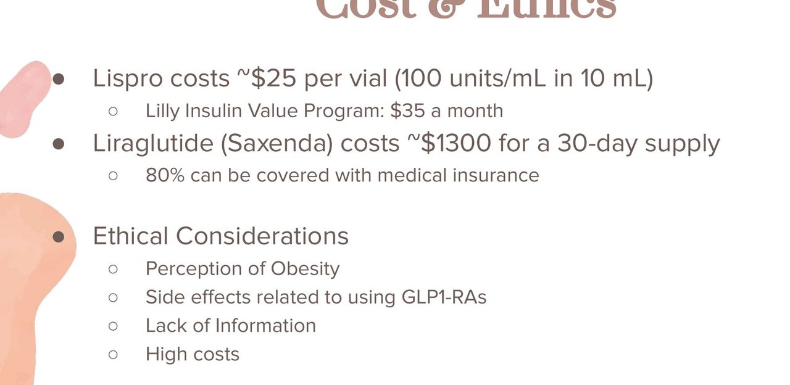

Home Featured work Pharmacokinetic modeling
06 · Modeling · Pharmacoeconomics
Two diabetes drugs, simulated and then priced
We added the compartments a standard glucose-insulin model was missing, simulated insulin lispro against the GLP-1 agonist liraglutide, and put the monthly cost of each drug next to the curve it produces.
- Timeline
- Fall 2023
- Context
- BME260 Modeling Cellular & Molecular Systems, Duke
- Team
- 5 students
- My role
- One of five. The deck does not break out individual contributions
- Tools
- Python, extended Bergman minimal model, ADME compartments, Hill kinetics, parametric sensitivity analysis
- Headline outcome
- Liraglutide returned glucose to baseline in 1 hour against lispro's 2 and 5 untreated, with a 28% peak reduction against lispro's 17%. It also costs roughly 37× more at list.
The problem
Type 2 diabetes has two very different pharmacological answers. Insulin analogs like lispro replace the hormone directly. GLP-1 receptor agonists like liraglutide work further upstream, amplifying the body's own insulin response to food and slowing gastric emptying. Both lower blood glucose. They do it on different timescales, through different mechanisms, at wildly different prices.
We wanted a comparison more informative than "both lower glucose," which meant building a model detailed enough that the difference in the shape of the response would show up rather than just the endpoints.
Why it is hard
The Bergman minimal model is the standard starting point for glucose-insulin dynamics, and it is minimal by design: glucose, insulin, insulin action. That is genuinely not enough to tell these two drugs apart, because the entire mechanism of a GLP-1 agonist lives in compartments the minimal model does not have. Run both drugs through Bergman and you get two curves that differ mostly in how you parameterized them, which tells you about your assumptions rather than about the drugs.
The second difficulty is that the honest answer involves money, and pharmacokinetic models do not have a price term. A model that stops at "liraglutide produces a better curve" has answered a question nobody is actually deciding.
What we built
We extended the Bergman model with compartments for glucagon and for GLP-1, added absorption, distribution, metabolism and excretion compartments so the two drugs' different routes and timescales would be represented honestly, and used Hill kinetics for the saturating hormone interactions rather than linear terms. We simulated healthy and diabetic physiology separately, then layered each drug on top, with glucose infusions timed to represent meals across a 24-hour day.

Results

- Time for glucose to return to baseline after a peak: liraglutide 1 hour, lispro 2 hours, no treatment 5 hours.
- Reduction in peak glucose against no treatment: liraglutide 28%, lispro 17%.
- Lowest glucose reached: liraglutide 2.5 mmol/L, lispro 3 mmol/L, no treatment 6 mmol/L.
Liraglutide wins on every simulated axis. We ran a parametric sweep across glucose effectiveness and insulin sensitivity to understand why, and that produced the more interesting finding: GLP-1 agonists appear to enhance insulin sensitivity, while exogenous insulin can drive insulin resistance over time. Those point in opposite directions, which is a real argument for combination therapy rather than a straight choice.

We also proposed an extension the course did not ask for: a weight term, dW/dt = α(CI − BMR(W) − EE(PA)), coupling caloric intake, basal metabolic rate as a function of body weight, and energy expenditure from activity. A GLP-1 agonist's appetite suppression feeds back into insulin sensitivity through body weight, so modeling the drug without modeling weight misses a loop that matters over months.
The part most modeling projects skip

A roughly 37-fold list price difference for a drug that returns glucose to baseline one hour sooner. That is not a modeling conclusion, it is a coverage and access conclusion, and it changes what the simulation is telling you. "Liraglutide is better" is true and nearly useless on its own. "Liraglutide is better and costs 37 times more at list, with insurance covering most of it for people who have insurance" is a sentence a formulary committee can act on.
We put the ethical considerations next to it rather than in an appendix: perception of obesity treatment, GLP-1 side effects, the information gap patients face, and cost as an access barrier.
What did not work
The limitations in the deck are ours, written before anyone asked, and I still think they are the right ones.
- The model cannot examine either drug the way a patient experiences it. Real treatment involves lifestyle management, and these drugs are usually taken alongside others, for example lispro with a longer-acting insulin analog. We modeled monotherapy because that is what the model could represent.
- It covers a short window. Nothing in it speaks to long-term effects or side effects, which is where most of the real clinical difference between these two drug classes lives.
- There is no variability in it. No sleep, no difference between nutrients producing the same glucose load, no between-patient spread. Every curve is a curve for an average patient who does not exist.
- The weight-loss function was proposed, not validated. We wrote the equation and did not fit it to data.
That third one is the real gap. The clinically interesting question is not where the mean goes, it is how wide the distribution is, because that is what determines whether a treatment is safe for the tail.
What I learned
A model is a tool for producing an argument, and the argument is not finished until it includes what the answer costs. I have used that framing continuously since, most directly in population health work where the question is never "does this intervention work" but "does it work well enough to be worth the clinician minute it consumes."
The companion project that term applied the same approach to naltrexone for alcohol use disorder, comparing a daily oral pill against a monthly injection on receptor occupancy and on what a missed dose does to each. Same lesson, different drug: adherence is a model parameter, not a footnote.
What I would do next
- Add between-patient variability and report a distribution. Sample insulin sensitivity and glucose effectiveness across a plausible population and report the 10th percentile alongside the mean. The tail is the clinically interesting part, especially given liraglutide's lower glucose floor.
- Model combination therapy. The parametric sweep already argues for it and the model has the compartments. Simulating lispro plus a GLP-1 agonist is the obvious next run and we never did it.
- Fit the weight function to published trial data rather than leaving it as a proposed form.
- Use net cost, not list. List price is the wrong number for an access argument. Net of rebates and typical copay is harder to source and far more honest.